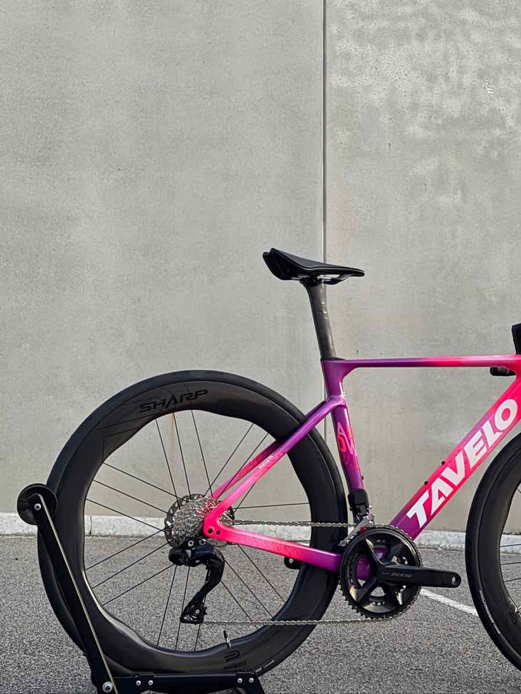

Tavelo.
Race-proven carbon.
Complete bikes, framesets and wheels, professionally built in our workshop and backed by local warranty support from MKP Bikes.
Complete bikes
Built, tuned and correctly sized before they leave the workshop.
Framesets & wheels
Build it yourself, or let our workshop build your Tavelo with your preferred groupset, wheels and finishing kit.
Performance carbon,
built by riders.
Tavelo was founded by experienced industry professionals in Xiamen, China, the global centre of high-end carbon manufacturing. With its own production facility and in-house R&D team, Tavelo keeps close control over carbon layup, engineering precision and manufacturing consistency.
Models like the Arow balance aerodynamic efficiency, stiffness and ride quality while staying exceptionally competitive on value.
Read: inside the Tavelo factory
In-house manufacturing and documented quality control throughout production.
Built to recognised international safety standards.
Road frames, including the Arow series, are eligible for sanctioned racing.
Lifetime warranty,
handled in Australia.
Buy your Tavelo through MKP and you never need to deal with an overseas seller if something goes wrong.
Covers the original frame, fork, seatpost and supplied frame parts, subject to Tavelo’s official warranty policy.
The warranty applies to the original purchaser who buys from an authorised dealer. Buying through MKP makes you eligible.
If an issue arises, MKP manages the claim and communicates directly with Tavelo on your behalf.
40% off crash replacement.
Damaged your Tavelo in a genuine crash during normal riding? You may be eligible for up to 40% off an identical or comparable replacement frameset.
- Applies to damage from a genuine crash or accident during normal riding.
- Proof of purchase from an authorised Tavelo dealer is required.
- Available once per eligible product and non-transferable.
- Cannot be combined with other promotions or discounts.
- Shipping for the replacement remains the customer’s responsibility.
- Approval is subject to Tavelo’s assessment and current policy. MKP manages the process for you.
Why buy Tavelo from MKP
Skip the risk of importing. Buy direct from overseas and you’re on your own for build, sizing, warranty and after-sales.
Genuine Tavelo bikes, framesets and components with official manufacturer support.
We manage the claim process directly with Tavelo, so you don’t have to.
Local assistance lodging official Tavelo crash replacement claims.
Professionally packed and securely delivered: bikes, framesets, wheels and parts.
Choose a frameset, or let our workshop build it with your groupset, wheels and kit.
From assembly and tuning to ongoing servicing, we’re here long after you buy.
Tavelo FAQs
Is MKP Bikes an authorised Tavelo dealer?
Yes. MKP Bikes is an authorised Tavelo dealer in Australia, giving you genuine Tavelo products backed by official manufacturer support, local warranty assistance and after-sales service.
What does the lifetime warranty cover?
Tavelo provides a lifetime warranty for the original purchaser covering the frame, fork, seatpost and supplied frame components, for products bought through authorised dealers such as MKP Bikes.
How does the 40% crash replacement work?
If your Tavelo is damaged in a genuine riding accident, eligible owners may receive up to 40% off an equivalent replacement frameset, subject to Tavelo’s official policy and proof of purchase from an authorised dealer.
Are Tavelo frames UCI certified?
Yes. Tavelo road frames, including the Arow series, are UCI certified and comply with ISO 4210, so they’re suitable for sanctioned racing.
Do you ship Tavelo Australia-wide?
Yes. We ship Tavelo products throughout Australia with secure packaging so your frameset or components arrive safely.
Can you build my frameset into a complete bike?
Absolutely. We’ll help you select compatible components and professionally assemble your Tavelo into a complete bike that’s ready to ride.
Ask us about Tavelo
Choosing your first frameset, comparing models or checking sizing, warranty or crash replacement? We’re here to help.